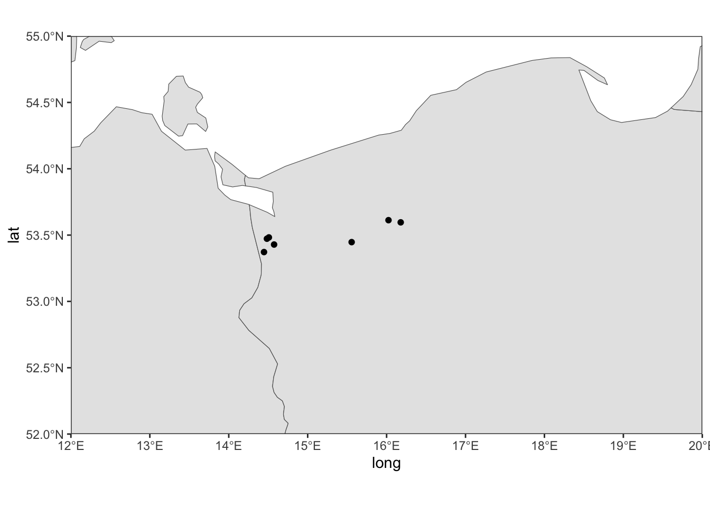
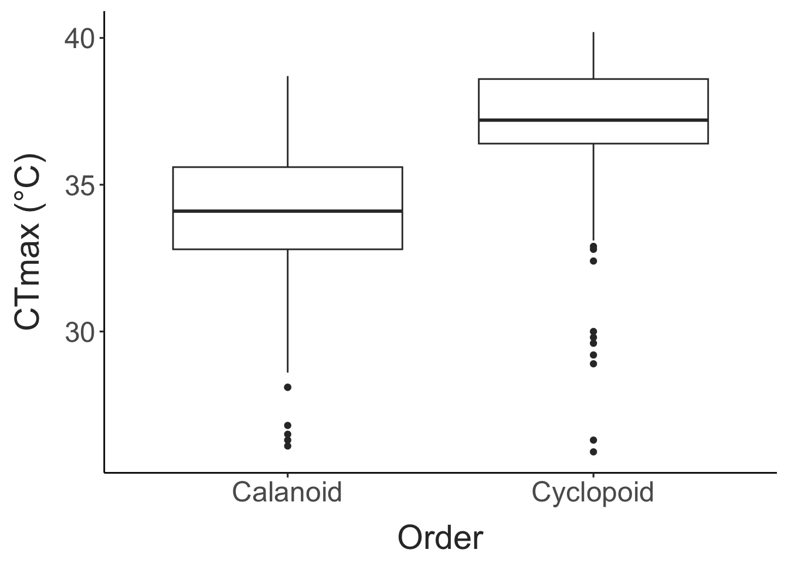
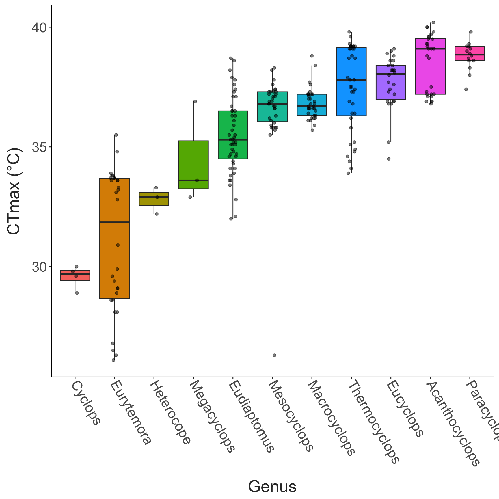
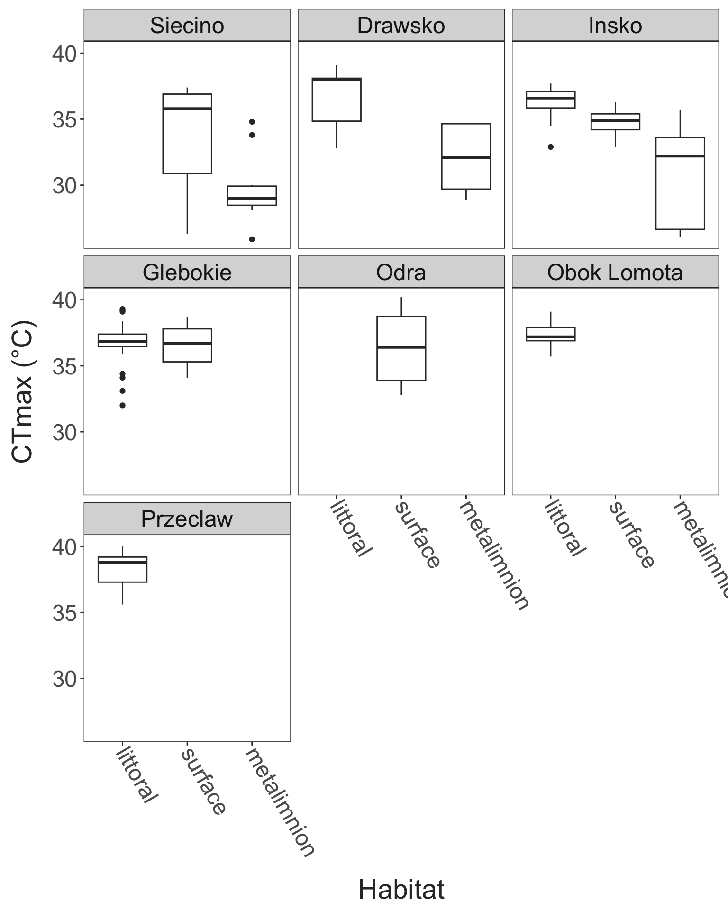
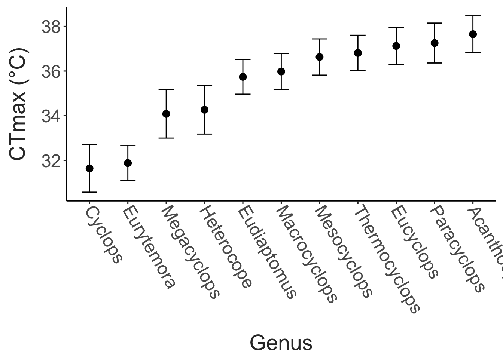

Data Summary
Ecophysiological and biogeographic predictors of CTmax in Polish copepods
This page summarizes the data collected, including the distribution of sampling sites, the species collected, and some basic summaries of the data collected.
Collection Details
Copepod collections were made from 6 sites from 2025-07-21 to 2025-07-27. A total of 252 CTmax measurements were made, ranging from 25.9 to 40.2°C.
The distribution of CTmax measurements from each site and habitat type is shown below.
| site | collection_date | littoral | surface | metalimnion | total |
|---|---|---|---|---|---|
| Siecino | 2025-07-21 | 0 | 25 | 12 | 37 |
| Drawsko | 2025-07-22 | 11 | 0 | 7 | 18 |
| Insko | 2025-07-23 | 11 | 11 | 11 | 33 |
| Glebokie | 2025-07-25 | 32 | 33 | 0 | 65 |
| Odra | 2025-07-26 | 0 | 55 | 0 | 55 |
| Obok Lomota | 2025-07-27 | 44 | 0 | 0 | 44 |
Taxonomic variation in CTmax
In general, cyclopoids had higher CTmax values than calanoid copepods.

CTmax data is shown below for individuals for which a genus was recorded (or could be speculated). Note, these CTmax values do not account for differences in collection temperature, and that there are several genera for which multiple species were likely sampled (e.g. Eurytemora and Acanthocyclops).

Other variation in CTmax
Broken down by habitat type, there are clear differences between thermal limits in the littoral, surface waters, and metalimnion. Again, these comparisons do not account for differences in collection temperature, but highlight intra-lake spatial variation in thermal limits that may be important to account for.

These differences in thermal limits may be attributed to multiple factors, including variation in species composition and acclimation to the different environments. Shown below are CTmax values from the different habitats, grouped by genus, allowing us to infer the relative contribution of these different mechanisms. The increased thermal limits in the littoral community are largely due to changes in community composition (genera/species in the littoral have higher CTmax values than those in the surface waters). For several genera (Eudiaptomus and Eurytemora, for example), the change in CTmax between the surface wates and metalimnion may be driven by acclimation - individuals from the metalimnion were collected from water around 10°C cooler than the surface waters.
Statistical modelling
We examined the data using a mixed effects model, where CTmax is modeled as a function of collection temperature, genus, and habitat type (with no interactions). Site, tube number (as a proxy for the position within the water bath), and the water bath ID were included as random effects. This model performs fairly well, although there is high variance inflation for both collection temperature and habitat type.
An ANOVA indicates strong effects of genus, but no effect of collection temperature or habitat type. This analysis will be more powerful when genera have been disaggregated to the species level.
| Chisq | Df | Pr(>Chisq) | |
|---|---|---|---|
| collection_temp | 0.8286045 | 1 | 0.3626764 |
| genus | 253.3995240 | 9 | 0.0000000 |
| habitat | 2.2371975 | 2 | 0.3267373 |
Using this model, we can extract the marginal mean effects for each genus (i.e. what is the expected CTmax for each genus, controlling for other factors like collection temperature). Here we show the expected CTmax for each genus at a collection temperature of 20°C. Again, we will plan on using a similar analysis to examine variation in CTmax across species.
